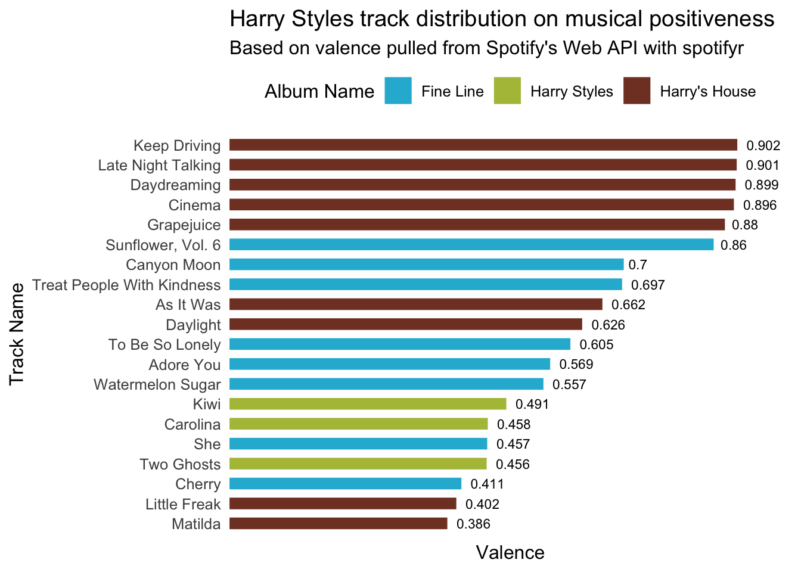
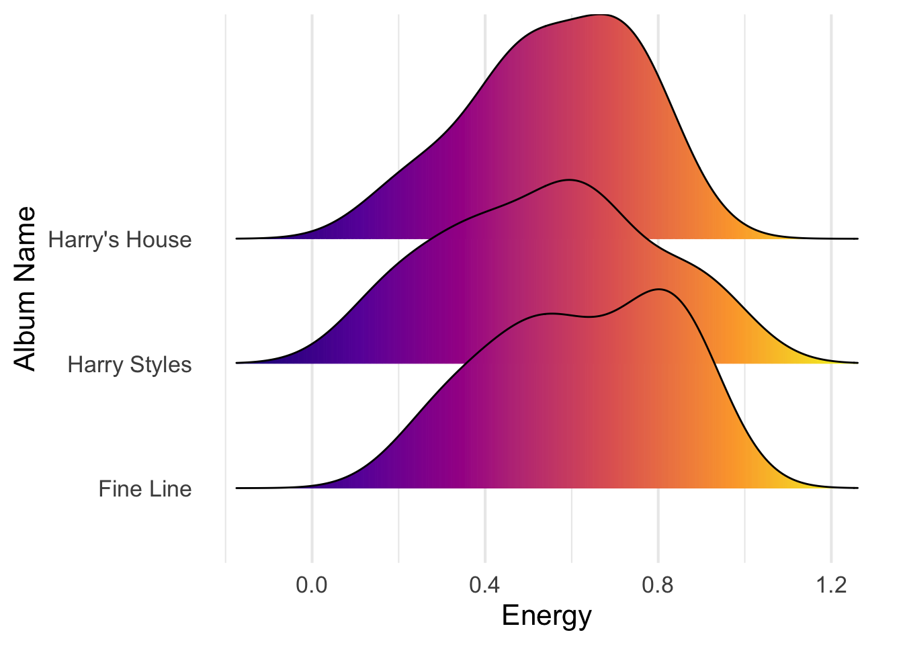
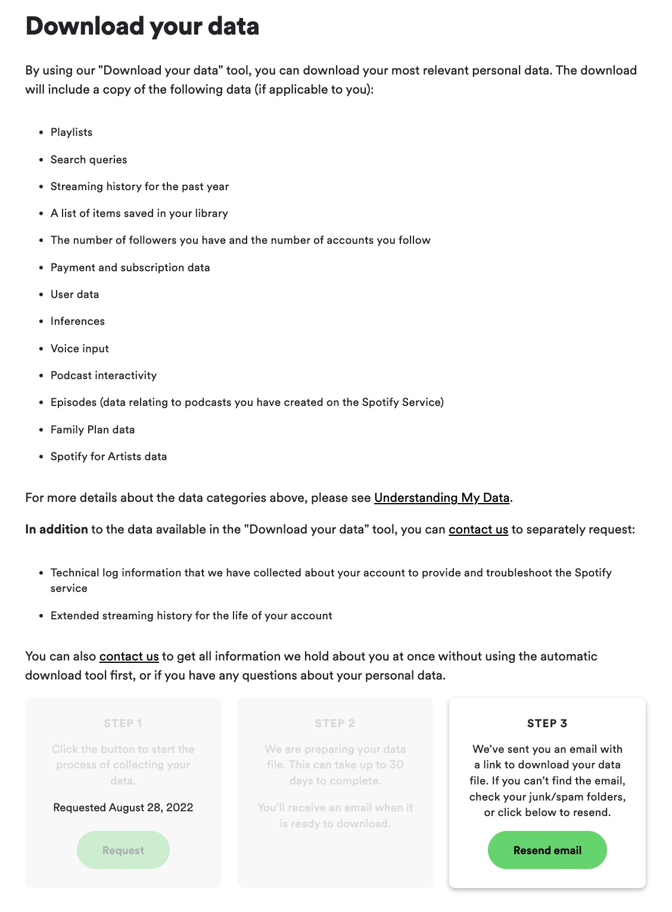
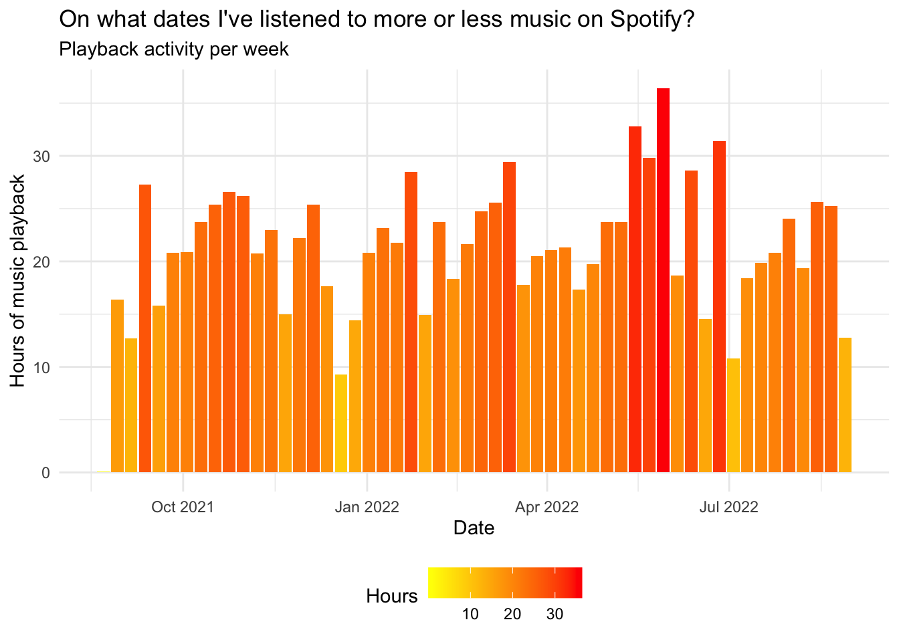
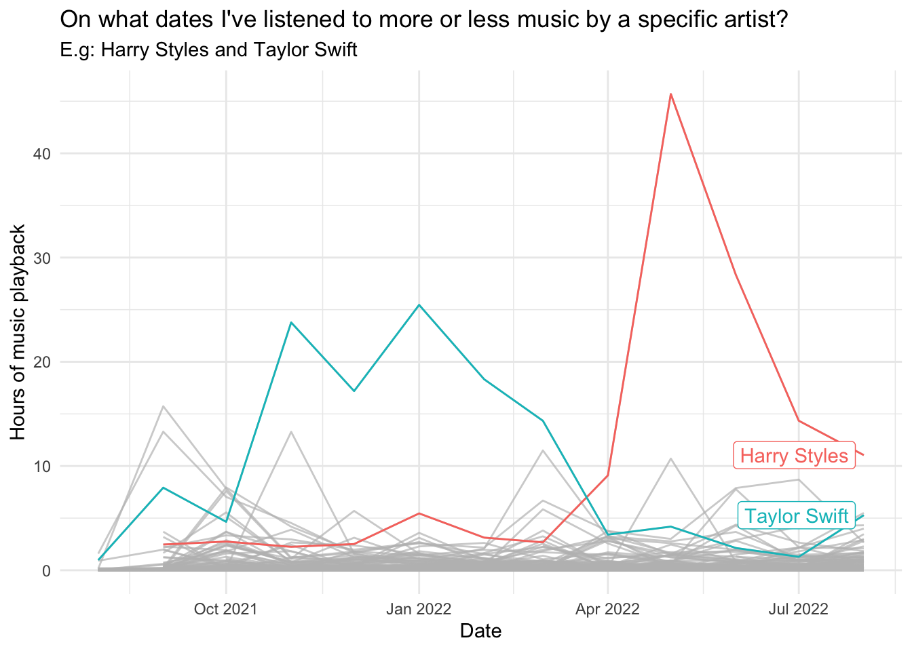
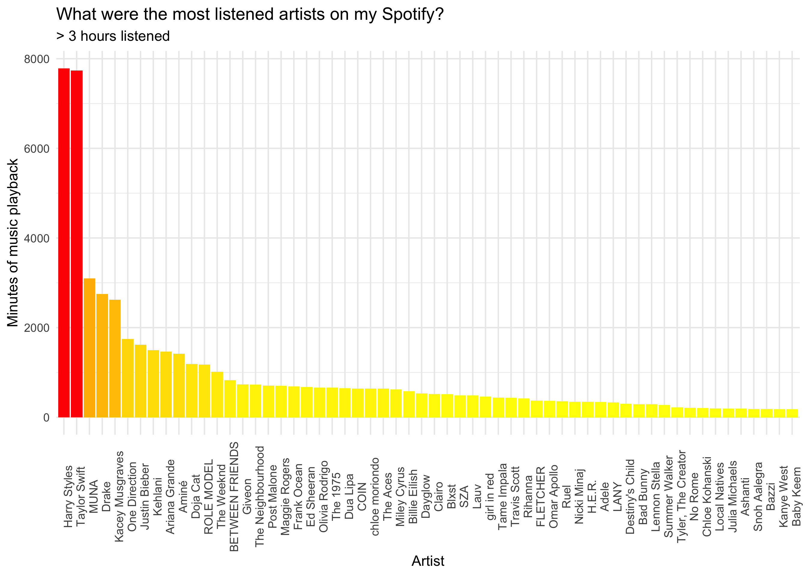
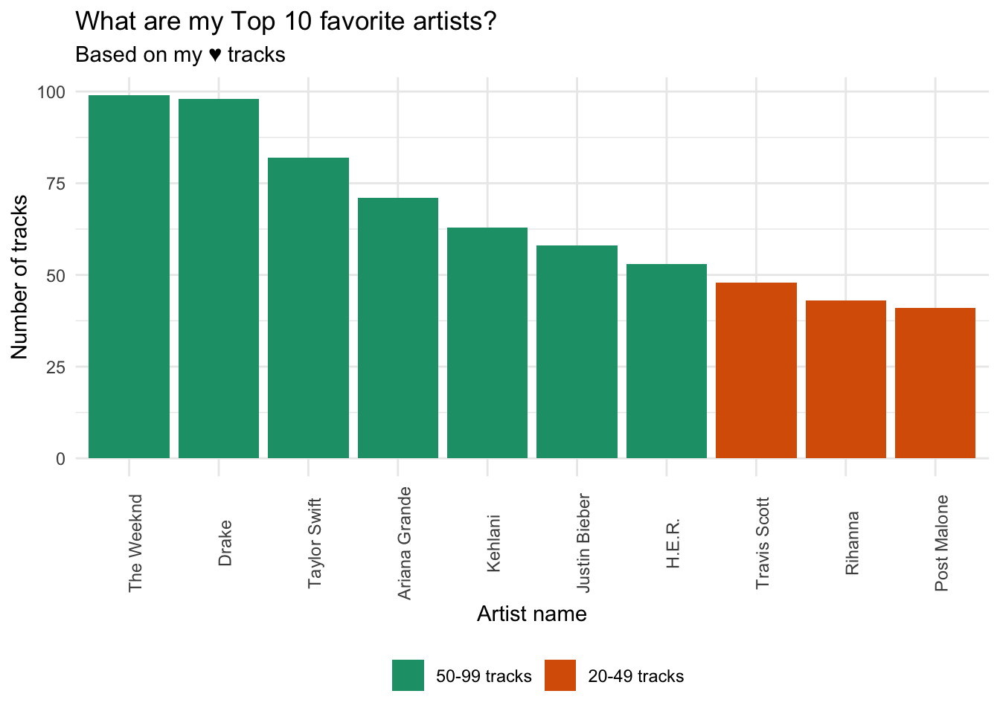

library(tidyverse)
library(here)
library(spotifyr)
library(purrr)
library(knitr)
library(ggridges)
library(ggjoy)
library(plotly)
library(jsonlite)
library(lubridate)
library(gghighlight)About
spotifyr is an R wrapper for pulling track audio features and other information from Spotify’s Web API in bulk. For more information on the package, I’d recommend taking a look at Charlie’s README.md for more details and examples. Here is another great website from Saúl Buentello that explores the spotifyr package and instructions to download your own spotify data.
Load packages
Find My All Time Favorite Artists
## Set up
# Sys.setenv(SPOTIFY_CLIENT_ID = 'xxxxxxxxxxxxxxxxxxxxx')
# Sys.setenv(SPOTIFY_CLIENT_SECRET = 'xxxxxxxxxxxxxxxxxxxxx')
# access_token <- get_spotify_access_token()
top_art_tracks_long <- get_my_top_artists_or_tracks(type = 'artists',
time_range = 'long_term',
limit = 50) %>%
select(.data$name, .data$genres) %>%
rowwise %>%
mutate(genres = paste(.data$genres, collapse = ', ')) %>%
ungroup
top_art_tracks_long %>%
head(10) %>%
kable()| name | genres |
|---|---|
| Taylor Swift | pop |
| Drake | canadian hip hop, canadian pop, hip hop, rap, toronto rap |
| Kehlani | pop, r&b, rap |
| The Weeknd | canadian contemporary r&b, canadian pop, pop |
| Harry Styles | pop |
| Ariana Grande | dance pop, pop |
| Justin Bieber | canadian pop, pop |
| Aminé | hip hop, pop, portland hip hop, rap |
| MUNA | dance pop, electropop, indie pop, indie poptimism, la pop, metropopolis, pop |
| Post Malone | dfw rap, melodic rap, rap |
What are the most joyful Harry Styles songs and albums ?
harry_styles <- get_artist_audio_features('harry styles')
harry_styles_joyful_songs <- harry_styles %>%
arrange(-valence) %>%
select(.data$track_name, .data$valence, .data$album_name) %>%
head(20)
ggplot(
harry_styles_joyful_songs,
aes(y = valence, x = reorder(track_name, valence))
) +
geom_col(aes(color = album_name, fill = album_name, width=.5)) +
scale_color_manual(values=c("#25b6d5", "#b1bf46", "#813f2b"), name = "Album Name") +
scale_fill_manual(values=c("#25b6d5", "#b1bf46", "#813f2b"), name = "Album Name") +
coord_flip() +
labs(title = "Harry Styles track distribution on musical positiveness",
subtitle = "Based on valence pulled from Spotify's Web API with spotifyr",
y = "Valence",
x = "Track Name") +
geom_text(aes(label = round(valence, digits = 3)), position=position_dodge(width=1.0), hjust= -0.30, size=3) +
scale_y_continuous(expand = c(0, 0), limits = c(0,1)) +
theme_minimal(base_size = 12) +
theme(axis.text.x=element_blank(),
axis.ticks.x = element_blank(),
panel.grid.major = element_blank(),
panel.grid.minor = element_blank(),
legend.position = "top")
ggplot(harry_styles,
aes(x = energy, y = album_name, fill = ..x..)) +
geom_density_ridges_gradient(show.legend = FALSE) +
scale_fill_viridis_c(option = "C") +
labs(x = "Energy",
y = "Album Name") +
theme_minimal(base_size = 16) +
theme(panel.grid.major.y = element_blank())
Exploring Harry Style’s discography on danceabiliy vs. valence (music positiveness)
- valence : A measure from 0.0 to 1.0 describing the musical positiveness conveyed by a track. Tracks with high valence sound more positive (e.g. happy, cheerful, euphoric), while tracks with low valence sound more negative (e.g. sad, depressed, angry).
hs <- harry_styles %>%
rename(album = album_name,
track = track_name) %>%
ggplot(aes(x = valence, y = danceability)) +
geom_point(size = 2, aes(color = album, group = track)) +
scale_color_manual(values=c("#25b6d5", "#b1bf46", "#813f2b"), name = "Album Name") +
theme_minimal() +
labs(x = "Valence",
y = "Danceability") +
theme(legend.position="bottom") +
scale_x_continuous(expand = c(0, 0), limits = c(0,1)) +
scale_y_continuous(expand = c(0, 0), limits = c(0, 1))
ggplotly(hs) %>%
layout(legend = list(orientation = "h", # show entries horizontally
xanchor = "center", # use center of legend as anchor
x = 0.5, # put legend in center of x-axis
y = -0.15)) # adjust legend text so its not overlapping with x-axis Explore my downloaded spotify history
- I downloaded my data at https://www.spotify.com/us/account/privacy/. After logging in, you can select “Download your data” and follow the steps to retrieve your data from your email.

# Reading JSON and streaming history
streamHistory0 <- fromJSON("StreamingHistory0.json", flatten = TRUE)
streamHistory1 <- fromJSON("StreamingHistory1.json", flatten = TRUE)
streamHistory2 <- fromJSON("StreamingHistory2.json", flatten = TRUE)
streamHistory3 <- fromJSON("StreamingHistory3.json", flatten = TRUE)
# Combine all histories
streamHistAll = rbind(streamHistory0, streamHistory1, streamHistory2, streamHistory3)# Adding date and timing
mySpotify <- streamHistAll %>%
as_tibble() %>%
mutate_at("endTime", ymd_hm) %>%
mutate(endTime = endTime - hours(6)) %>%
mutate(date = floor_date(endTime, "day") %>% as_date, seconds = msPlayed / 1000, minutes = seconds / 60)
# Playback activity per week and hours
streamingHours <- mySpotify %>%
filter(date >= "2020-01-01") %>%
group_by(date) %>%
group_by(date = floor_date(date, "week")) %>%
summarize(hours = sum(minutes) / 60) %>%
arrange(date) %>%
ggplot(aes(x = date, y = hours)) +
geom_col(aes(fill = hours)) +
scale_fill_gradient(low = "yellow", high = "red") +
labs(x= "Date", y= "Hours of music playback", fill = "Hours") +
ggtitle("On what dates I've listened to more or less music on Spotify?", "Playback activity per week")+
theme_minimal() +
theme(legend.position="bottom")
streamingHours
On what dates did you listen to more or less music by a specific artist?
# Playback activity for Harry Styles & Taylor Swift
hoursArtist <- mySpotify %>%
group_by(artistName, date = floor_date(date, "month")) %>%
summarize(hours = sum(minutes) / 60) %>%
ggplot(aes(x = date, y = hours, group = artistName)) +
labs(x= "Date", y= "Hours of music playback") +
ggtitle("On what dates I've listened to more or less music by a specific artist?", "E.g: Harry Styles and Taylor Swift") +
geom_line(aes(color = artistName)) +
gghighlight(artistName == "Harry Styles" || artistName == "Taylor Swift") +
theme_minimal()
hoursArtist
What were the artists you listened to the most on your Spotify?
# Most listened artist (more than 3 hours)
minutesMostListened <- mySpotify %>%
filter(date >= "2020-01-01") %>%
group_by(artistName) %>%
summarize(minutesListened = sum(minutes)) %>%
filter(minutesListened >= 180) %>%
ggplot(aes(x = reorder(artistName, -minutesListened), y = minutesListened)) +
geom_col(aes(fill = minutesListened)) +
scale_fill_gradient(low = "yellow", high = "red") +
labs(x= "Artist", y= "Minutes of music playback", fill = "Minutes Listened") +
theme_minimal(base_size = 18) +
ggtitle("What were the most listened artists on my Spotify?", "> 3 hours listened") +
theme(axis.text.x = element_text(angle = 90),
legend.position = "none")
minutesMostListened
Exploring my liked tracks
# Get favorite tracks from likes
myFavTracks <- ceiling(get_my_saved_tracks(include_meta_info = TRUE)[['total']] / 50) %>%
seq() %>%
map(function(x) {
get_my_saved_tracks(limit = 50, offset = (x - 1) * 50)
}) %>%
reduce(rbind) %>%
write_rds('raw_myFavTracks.rds')What my top artists based on my liked tracks?
favTracksArtist <- myFavTracks %>%
select(track.artists) %>%
reduce(rbind) %>%
reduce(rbind) %>%
select(id, name)
trackNumArtist <- favTracksArtist %>%
count(id, sort = TRUE) %>%
left_join(favTracksArtist, by = 'id',.) %>%
unique() %>%
select(-id) %>%
top_n(10, n)
# Plot top 10 artists based on liked tracks
plotMyFavs <- trackNumArtist %>%
mutate(freq = case_when(n > 100 ~ '> 100 tracks',
between(n, 50, 99) ~ '50-99 tracks',
between(n, 20, 49) ~ '20-49 tracks',
TRUE ~ '< 20 tracks')) %>%
mutate(freq = factor(freq, levels = c('> 100 tracks', '50-99 tracks', '20-49 tracks', '< 20 tracks'))) %>%
ggplot(mapping = aes(x = reorder(name, -n), y = n, fill = freq)) +
geom_col() +
scale_fill_brewer(palette="Dark2") +
labs(x= "Artist name", y= "Number of tracks", fill = NULL) +
ggtitle("What are my Top 10 favorite artists?", "Based on my ♥ tracks") +
theme_minimal() +
theme(axis.text.x = element_text(angle = 90),
legend.position="bottom")
plotMyFavs